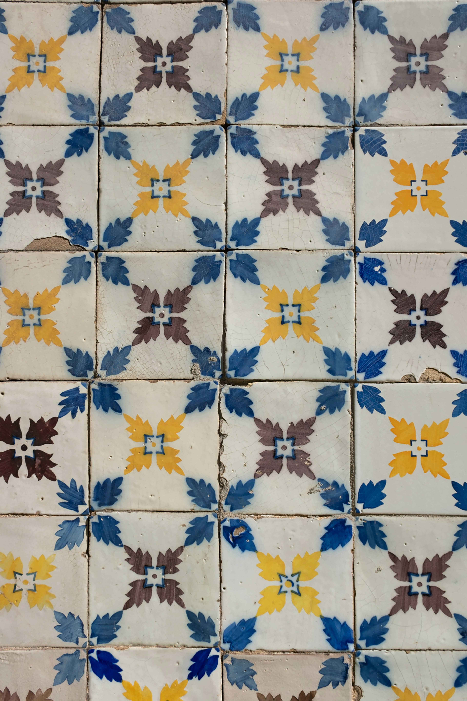
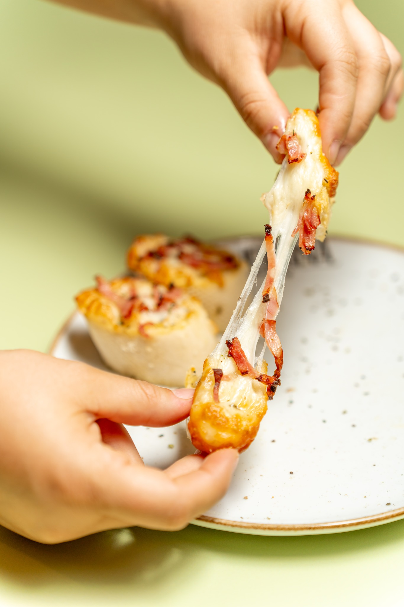
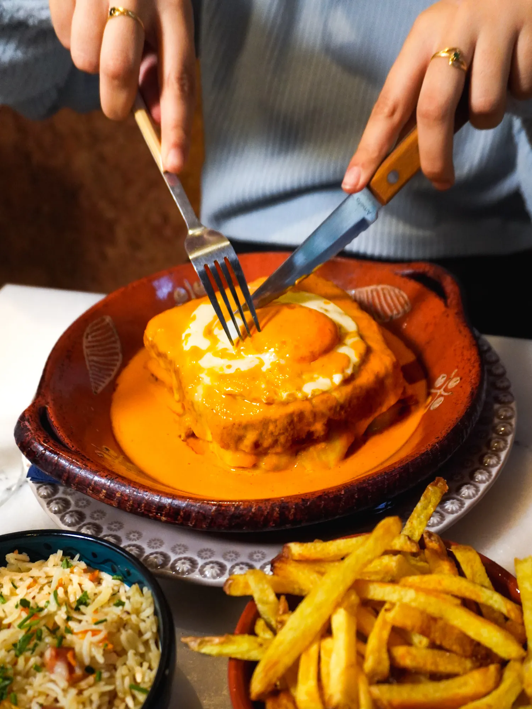
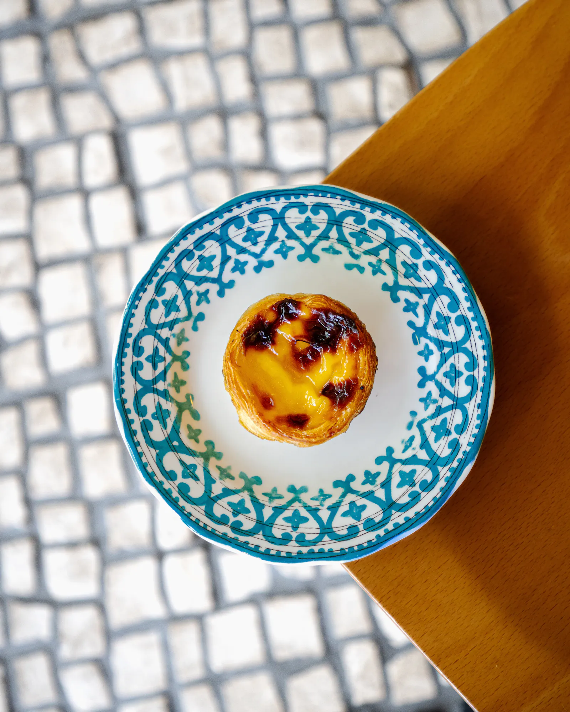
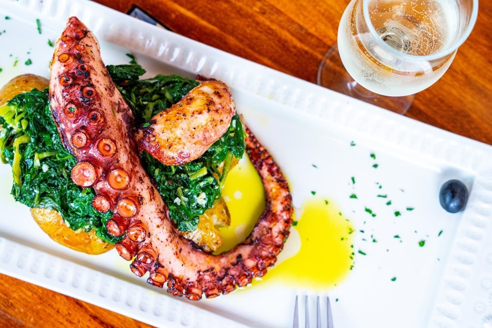
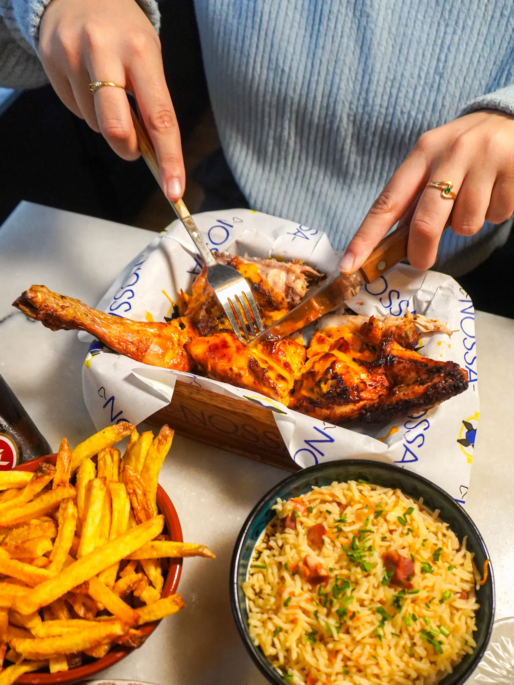

Notre histoire
Une passion familiale transmise de génération en génération, de Braga à Paris
De Braga au Coeur de Paris
Notre histoire commence en 1962 dans la magnifique ville de Braga, au nord du Portugal. João et Maria Pereira, nos grands-parents, tenaient déjà une petite "tasca" où les saveurs authentiques du Minho enchantaient les habitants du quartier.
En 1985, leur fils Manuel Joaquim décide de faire le voyage vers Paris, emportant avec lui les recettes familiales soigneusement gardées et cette passion pour la cuisine portugaise authentique qui caractérise notre famille.
L'Authentique Tradition Bracarense
Aujourd'hui, c'est sa fille Lurdes qui perpétue cette tradition culinaire. Chaque matin, elle sélectionne personnellement les meilleurs produits, importe ses épices directement du Portugal et prépare ses plats selon les méthodes ancestales apprises de sa grand-mère.
Nos Azulejos, véritables œuvres d'art, ornent les murs de notre restaurant et racontent l'histoire de notre belle région de Braga, connue pour ses sanctuaires, sa gastronomie et l'hospitalité légendaire de ses habitants.

"La cuisine, c'est l'âme du Portugal. Chaque plat raconte une histoire, chaque saveur évoque un souvenir."
— Lurdes Pereira, Chef propriétaire
Nos valeurs
- Authenticité des recettes traditionnelles
- Produits importés directement du Portugal
- Ambiance chaleureuse et familiale
- Transmission du patrimoine culinaire lusitanien
Galerie
Découvrez l'ambiance chaleureuse de notre restaurant et nos spécialités authentiques à travers ces images.




